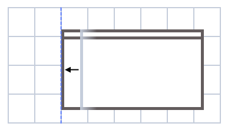

Acquire the full source from GitHub.
Acquire the full source from GitHub.
This program extends the functionality of the Windows 7 [Win][Arrow Keys] hotkeys, allowing you more control over your window layout.
This software is licensed under the MIT License.
Acquire the full source from GitHub.
Note: All keybindings in stated by document are configurable. You can change them in the Configuration File . The defaults are listed here for simplicity.


By default, [Alt][Arrow Keys] will expand the window in the specified direction. By default, the window expands:
Using [Alt][WASD] will move the window in a similar way.
You can change these settings in the Configuration File . The window will never expand over monitor's border. To move a window over the edge of on monitor to another, use [Win][Arrow Keys].

|
 |
| A window will expand until it hits the edge of the nearest window, or... | ... it will expand to the next grid cell of the screen. |

You can make smaller increments to the grid-based movement by using [Shift][Alt][Arrow Keys].

Take the case where you have a nice setup going, but one half of the monitor isn't quite wide enough. Using [Alt][Arrow Keys] on the blue window below will cause the window to overlap the brown, and the pink would no longer be aligned.
Instead, use [Ctrl][Alt][Arrow Keys] to keep them all in sync:

|

|
| Using [Ctrl][Alt][Arrow Keys] allows you to adjust the size of a window while preserving your window layout. | |
The configuration file allows you to adjust some of the keys and behaviour of AWHK.
It is a plain text file consisting of a set of key-value pairs. It doesn't exist by default. You can find it or create it at the following location on disk:
%LOCALAPPDATA%\AWHK.ini
If you create or make changes to this file, you can reload the configuration with the Alt+F2 binding (by default). You'll see this prompt:
AWHK can also create this file for you, and/or open it in your default text editor, using the Shift+Alt+F2 binding (by default).
| Key Name | Default Value | Purpose |
| LaunchOnStartUp | false | Configures AWHK to run on Windows start-up. This only takes effect if the configuration file is parsed, either on AWHK start-up or after you reload the configuration file. |
| AllowSnapToOthers | false | Snaps window movements and resizes to the edges of other windows. (Caution: this can be annoying if you have many overlapping or obscured windows, so it is disabled by default.) |
| MaxEdgeSearchSize | 128 | The number of window edges to consider when searching for an edge to snap to. You generally should never need to change this, but if you have hundreds of windows, you might want to increase it. |
| GridX | 8 | Partitions the screen into N segments to snap to in the horizontal axis. |
| GridY | 4 | Partitions the screen into N segments to snap to in the vertical axis. |
| FineX | 32 | Partitions the screen into N segments to snap to in the horizontal axis when using the Fine modifier. |
| FineY | 16 | Partitions the screen into N segments to snap to in the vertical axis when using the Fine modifier. |
| HelpCombo | ALT | Launch this help. |
| ReloadConfigCombo | ALT+F2 | Prompt to reload the configuration file. |
| EditConfigCombo | SHIFT+ALT+F2 | Launch the configuration file in your default text editor. If it doesn't exist, it is created. |
| QuitCombo | SHIFT+ALT+F4 | Prompts to quit AWHK. |
| MoveKeyMod | ALT | Hold this to enable the movement keys. |
| NextKeyMod | CONTROL | Hold this to also push or pull other windows touching the current window edge. |
| FineKeyMod | SHIFT | Hold this to snap to the finer grid. |
| ResizeKeys | LEFT,RIGHT,UP,DOWN | Use these with the modifiers to resize the current window. |
| MoveKeys | A,D,W,S | Use these with the modifiers to move the current window. |
| MediaPrev | SHIFT+ALT+F11 | Skip back to the previous media track. |
| MediaNext | SHIFT+ALT+F12 | Skip to the next media track. |
| MediaStop | not bound | |
| MediaPlayPause | ALT+F9 | Play or pause the current media track. |
| MediaVolumeMute | ALT+F10 | Mute the volume. |
| MediaVolumeDown | ALT+F11 | Reduce the volume. |
| MediaVolumeUp | ALT+F12 | Increase the volume. |
Copyright © 2022 Peter J. B. Lewis